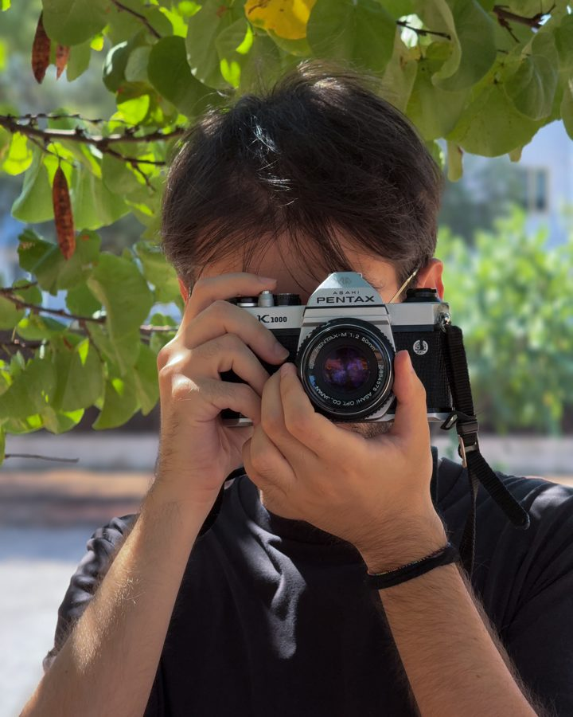

Officine Cantelmo
Videomaker & content creator · 2025–2026
Video e fotografia per eventi e canali social: riprese, montaggio, color e formati verticali.
Guarda i contenuti →00:00 VIDEOMAKER · VIDEO EDITOR
Produzione, montaggio e color grading — Lecce / remoto
Videomaker & content creator · 2025–2026
Video e fotografia per eventi e canali social: riprese, montaggio, color e formati verticali.
Guarda i contenuti →Videomaker · 2025–2026
Room tour degli alloggi e contenuti social per il portale n.1 degli affitti per studenti.
Guarda i contenuti →Videomaker · agenzia di comunicazione · 2026
Reel e contenuti verticali per i clienti dell'agenzia, dallo shooting alla consegna.
Guarda i contenuti →Videomaker · 2024
Video corporate per progetti di ristrutturazione: racconto del cantiere per clienti, sito e social.
Guarda i contenuti →Videomaker · 2022–2023
Video per l'associazione di street art: riprese con drone e timelapse per un documentario Sky.
Guarda i contenuti →Cortometraggio documentaristico · 2025
Scritto e ideato da me. Regia, montaggio video e audio: un racconto di storie autentiche del territorio, per dare voce a chi non ne ha.

Videomaker per mestiere, narratore per natura. Curo ogni fase del processo: riprese, montaggio, sound, color grading. Lo stile di un video si costruisce in ogni passaggio, non solo in post produzione.
Non lavoro con uno stile fisso. Un contenuto commerciale chiede ritmo, un racconto cinematografico chiede respiro: il mio compito è capire cosa serve a chi ho davanti, e costruirlo.
Filmmaker and video editor based in southern Italy, available for remote work worldwide.
Cerco opportunità come videomaker o video editor, in Italia o da remoto.